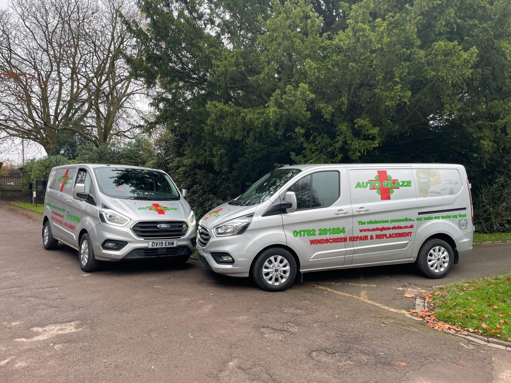
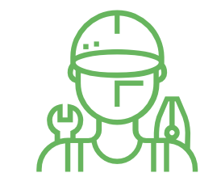

Independent Family-Run Specialists Since 2003
Windscreen Repair & Replacement
Mobile and workshop vehicle-glass services across Staffordshire and Cheshire.

About Us
Autoglaze Stoke has been established since 2003 with a well-known reputation for being a family-run business. As windscreen repair & replacement experts, we offer a wide range of professional services, including windscreen repairs, windscreen replacement, body glass replacement, and the replacement of side and rear windows in all makes and models of vehicles.
Our aim is to provide a low-cost, high-quality repair and replacement service to new and existing customers throughout Staffordshire and Cheshire.
Discover MoreWe Offer Workshop Appointments
Whether you need a stone chip repair on your windscreen or a full windscreen replacement, Autoglaze is here to help. We offer same-day service where possible, and our team is fully mobile so that you can carry on with your day. To learn more about our services, contact our team of windscreen repair & replacement experts today.
 Windscreen Replacement
Windscreen Replacement
Why Choose Autoglaze
We provide a fast and fully mobile windscreen repair service, which can stop further damage from occurring and keep you safe on the roads. To learn more about our services, contact our team of windscreen repair & replacement experts today.

Expert Glaziers
Windscreen Repair and Replacement for
Fleet & Trade Vehicles
When you have a large fleet of vehicles, we understand that a service needs to be quick as well as efficient so as not to disrupt the day-to-day running of your business. Here at AutoGlaze, our windscreen repair & replacement experts’ quick response time, as well as our high level of service, ensures that your vehicles will be back on the road in no time at all.
Our commercial and fleet windscreen repair and replacement services are available for local businesses, including company cars, vans, HGVs, emergency vehicles, and industrial vehicles. As windscreen repair & replacement experts, we pride ourselves on quality workmanship and excellent customer service, which has led many local companies to hire us regularly. We also offer account options for companies, making us the trusted choice for garages, body shops, haulage contractors, and car dealers in the area.

- Company cars
- Vans & HGVs
- Emergency vehicles
- Industrial vehicles
We Offer Workshop Appointments
The complete windscreen service.
Whether you need a windscreen repair for a stone chip or a full windscreen replacement, Autoglaze - your windscreen repair & replacement experts - is here to help. We offer same-day service where possible and our fully mobile team ensures you can carry on with your day.
Contact Us
- 60 Nile St, Stoke-on-Trent ST6 2BH
- 01782 281884